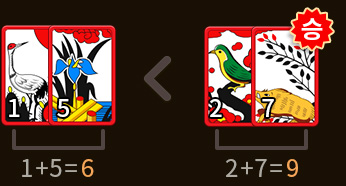
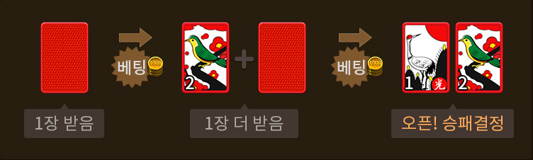
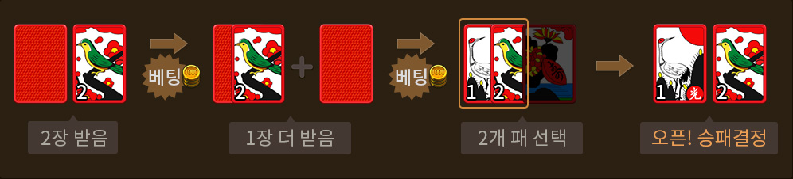
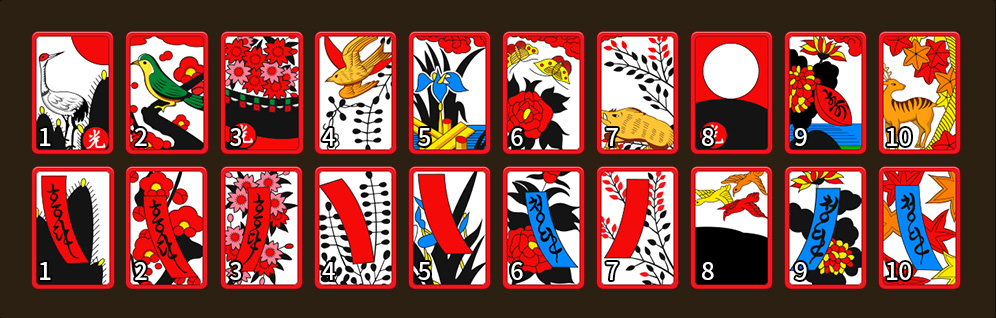

섯다란?
섯다란?

- 섯다는 화투패 2장으로 높은 족보를 만들어 상대를 제압하는 베팅 게임입니다.
- 삼팔광땡, 알리 등의 일반 족보와 땡잡이, 구사 등의 특수 족보로 서열을 넘나드는 눈치게임이 진행됩니다.
2장 섯다
화투패 1장을 먼저 받고 베팅한 후에 1장을 더 받고 베팅을 진행합니다.

3장 섯다
2장을 먼저 받고 베팅한 후 패 1장을 더 받고 베팅을 한 번 더 하는 게임 방식입니다.

섯다 패
- 섯다에서는 1월부터 10월까지의 패 중 피를 제외한 패를 사용합니다.
- 20장에서 두 장을 사용하여 족보를 만들어 족보 대결을 합니다.
